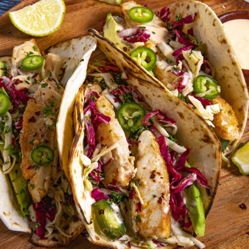

Fish Tacos:

Description:
These tacos use an easy to buy tilapia, which
can be purchased cheaply at many grocery stores.
With the right ingredients they make a delicous and
simple fish taco.
Incredients:
- 3-4 tilapia fillets
- fresh tortillas
- finely chopped lettuce
- queso fresco
- limes
Steps:
- Pan sear tilapia fillets
- chop each fillet into strips
- place 2 strips into each torilla
- crumble queso fresco over taco
- add lettuce and squeeze lime
- ENJOY!!